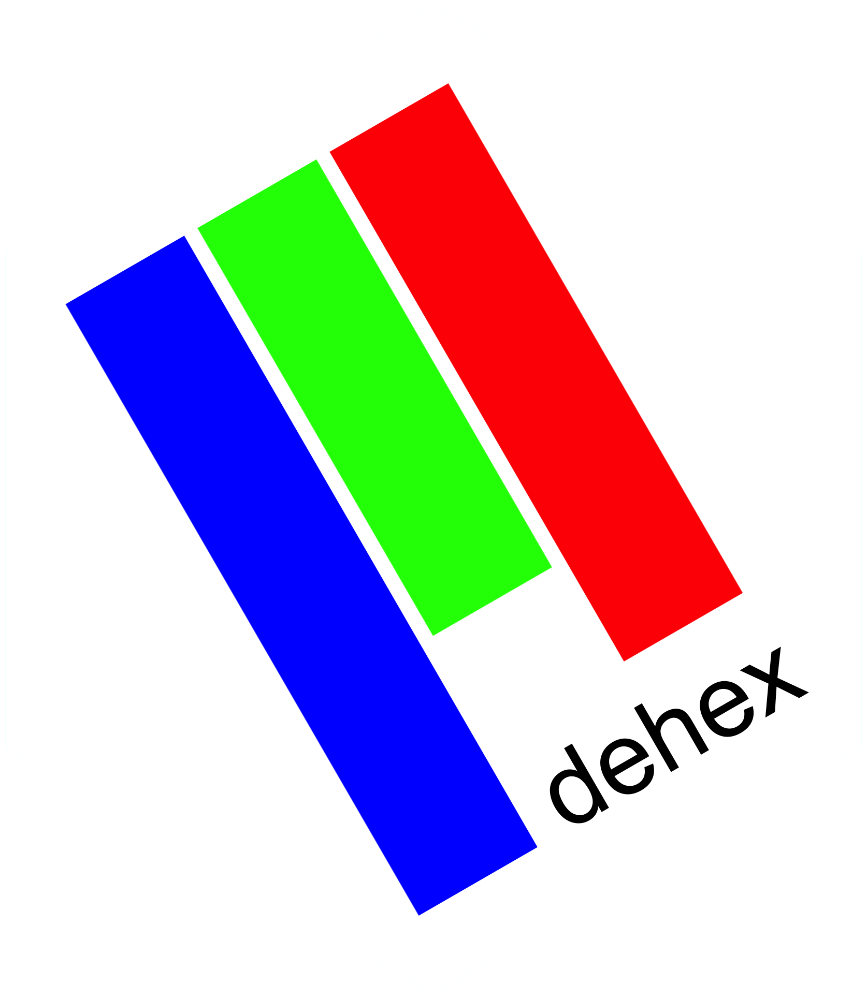
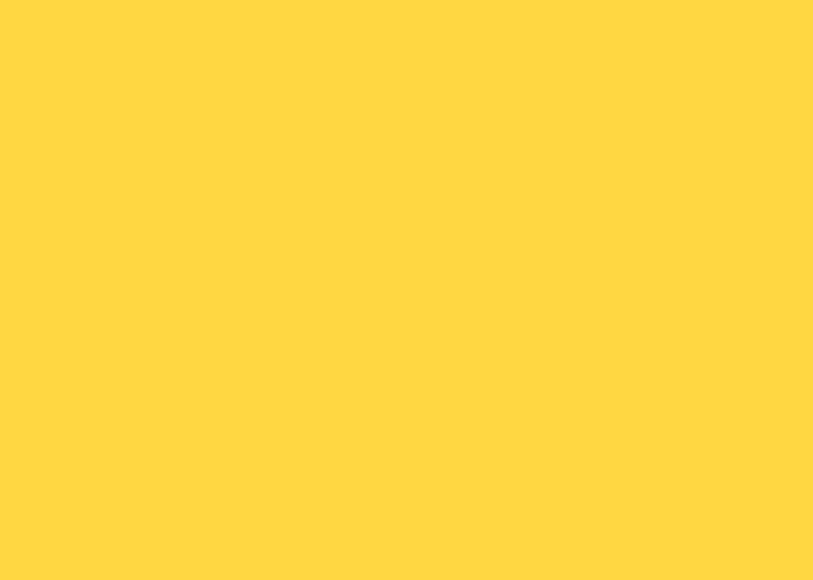
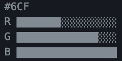
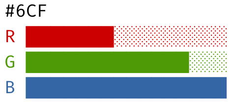
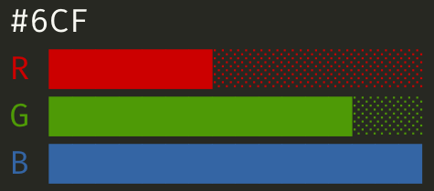
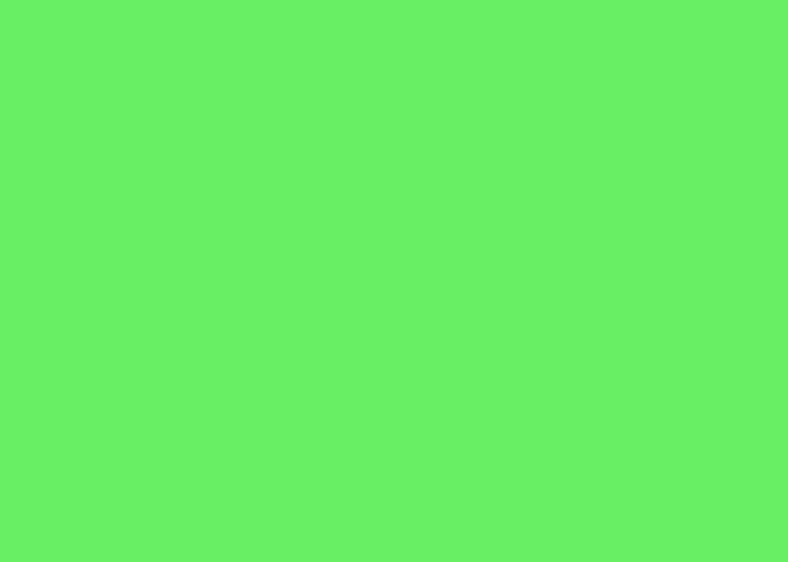

remotes::install_github("matt-dray/dehex")
tl;dr
I wrote an R package, {dehex}, that helps you learn to ‘read’ a hex colour code by eye according to David DeSandro’s method. Check out his mindblowing talk.
Hue are you?
Hex codes are used in computing to encode a colour as a succinct six-digit alphanumeric string, like #F4D82A.
These codes are written in hexadecimal (hence ‘hex’): they can take the characters 0 to 9 and A to F, which encodes 16 possible values. This encodes 16 million colours total, which are easy for computers to store and interpret.
Each pair of characters basically encodes red, green and blue. For example, the code #FF000 is ‘red’. It uses the highest of these hex values, ‘F’, in both of the ‘red’ positions, while the green and blue pairs are zero.
That’s easy enough to decipher, but what about #8ACD52 or #C0FFEE?1 You could copy these into a tool that returns colour information (many search engines can do this now) but they often return a sample and not the colour’s name.
I’m red-green colourblind and have difficulty identifying and talking about colours, so that’s not always helpful.
The DeSandro Method
David DeSandro of Metafizzy gave a talk at the dotCSS conference in 2018 about his superpower: ‘reading’ a hex colour code by eye.2
His talk is comprehensive and has excellent visuals. I strongly recommend that you watch his explanation if you find this topic interesting. You can also find the slides and a great written explanation on his blog. I cannot do justice here to such a powerful thought technology.
In short, it’s possible to look at a hex code like #F2D359 and get the rough hue, saturation and lightness of the colour it encodes, which you can speak as an English phrase like ‘light washed yellow’. David, too, is colourblind and has found success with his method.
This post isn’t about colour theory and I’m definitely not an expert, but the point of the method is that you don’t need to be one.
Introducing {dehex}

Right, so I’ve made a small R package called {dehex} that you can use to:
- Train yourself to read hex codes with the DeSandro Method
- Return a rough English phrase for a given hex code
All from your R console.
The package is on GitHub and you can install with the help of {remotes}.
The reason for the name should be obvious: you’re ‘dehexing’, i.e. converting from hex. But also I like the connotation of removing a ‘hex’ as in a spell. The colour is cursed; it’s trapped behind a code.
Usual warnings: the package needs a refactor, there’s probably some bugs, but it works for me. Drop an issue or PR in the GitHub repo with any ideas or suggestions.
Cheat codes
You are thinking:
Ugh, this sounds like effort, just tell me what colour my hex code is
So I’m going to show you immediately how to retrieve an English phrase and a colour sample for a given hex code. Probably this is the most useful bit of the package for users who don’t want to become a hex mentat.3
Since we’re ‘solving’ the hex code, the function is called dh_solve().4 It outputs a text string.
dehex::dh_solve("#F2D359")[1] "light washed yellow"If you set swatch to TRUE, then you’ll get a plot filled with that colour as well.
dehex::dh_solve("#F2D359", swatch = TRUE)
[1] "light washed yellow"How lovely.
ℹ️ Note
I later noticed that the package {ColorNameR} exists, which has the express purpose of taking a colour code and returning a name for that colour.
Learning is fun
For the more adventurous, you can use {dehex} to learn how to read a hex code with DeSandro’s method from your R console.
There’s five steps:
- Simplify from a six- to a three-digit hex code
- Create a bar chart from the RGB values encoded by the short hex
- Assess hue (red, orange, violet, etc) from the chart’s ‘shape’
- Assess saturation (‘saturated’, ‘washed’, etc) from the range of the RGB values
- Assess lightness (‘dark’, ‘middle’, ‘light’) from the total of the RGB values
I’ve incorporated each of these into {dehex}, plus a method for getting the answer.
1. Three-digit code
Turns out that the first value of each pair is the important one when determining colour, so you can shorten the standard six-digit hex code to just three digits.
That’s easy enough to do in your head, but the function dh_shorten() does it for you:
hex_code <- "#F2D359"
short_code <- dehex::dh_shorten(hex_code)
short_code[1] "#FD5"As it happens, the short code is still recognised by interpreters, but it’s often expanded double up each value to get back to six. So #FD5 is technically #FFDD55 rather than the original #F2D359, but that doesn’t really matter for our purposes.
2. RGB graph
The values in the shortcode encode an ‘amount’ of red, green and blue. The lowest value is 0 and the highest is F, which is hexadecimal for 15. The higher the value, the more that’s ‘mixed’ into the final colour.
You can use dh_graph() to create this for you automatically. Rather than generate a plot though, we can just print a cute bar graph to the console. We’re only using it for reference, after all.
dehex::dh_graph(
short_code,
adorn_h = FALSE, adorn_s = FALSE, adorn_l = FALSE
)#FD5
R ████████████████
G ██████████████░░
B ██████░░░░░░░░░░For whatever reason, certain browsers struggle to render these graph outputs correctly in this blog post (seems fine in Firefox). In your console, the graphs will appear with neat ‘continuous’ bars instead of as individual blocks. Example in a dark theme editor:

The output is a horizontal chart showing the values of red (R), green (G) and blue (B) encoded by the hex short code. Each bar is made from 16 unicode block elements (i.e. 0 to 15), which are ‘filled’ to represent the amount of each colour.
If you’re using RStudio, this will print in colour, thanks to the {crayon} package (although you can turn it off with the argument crayon = FALSE). That looks like this using RStudio’s default light theme:

Or, using a dark theme:

Perhaps you’re wondering what the adorn_* arguments do in dh_graph(). They add extra information to the output that will help us in steps 3 to 5. I’ll switch these on as we go through those next steps.
3. Hue
For our purposes, hue is basically a name we give a colour, like ‘orange’. We’re going to compare the ‘profile’ or ‘shape’ of our RGB graph to a number of others to determine which one most closely resembles ours.
For simplicity, we stick only to the primary, secondary and tertiary colours in the RGB colour system: red, green and blue; yellow, cyan, magenta; orange, chartreuse, aquamarine, azure, violet and rose. We also include a special case: grey.5
The {dehex} package has a built in guide that will print RGB graphs for each of these colours. Since this is a guide for hue, you pass the argument "H". I’ve hidden the output, since there are 13 graphs.
dehex::dh_guide("H")Click to expand the hue guides
red
R ████████████████ H 3
G █░░░░░░░░░░░░░░░ H 1.5
B █░░░░░░░░░░░░░░░ H 1.5
green
R █░░░░░░░░░░░░░░░ H 1.5
G ████████████████ H 3
B █░░░░░░░░░░░░░░░ H 1.5
blue
R █░░░░░░░░░░░░░░░ H 1.5
G █░░░░░░░░░░░░░░░ H 1.5
B ████████████████ H 3
yellow
R ████████████████ H 2.5
G ████████████████ H 2.5
B █░░░░░░░░░░░░░░░ H 1
cyan
R █░░░░░░░░░░░░░░░ H 1
G ████████████████ H 2.5
B ████████████████ H 2.5
magenta
R ████████████████ H 2.5
G █░░░░░░░░░░░░░░░ H 1
B ████████████████ H 2.5
orange
R ████████████████ H 3
G █████████░░░░░░░ H 2
B █░░░░░░░░░░░░░░░ H 1
chartreuse
R █████████░░░░░░░ H 2
G ████████████████ H 3
B █░░░░░░░░░░░░░░░ H 1
aquamarine
R █░░░░░░░░░░░░░░░ H 1
G ████████████████ H 3
B █████████░░░░░░░ H 2
azure
R █░░░░░░░░░░░░░░░ H 1
G █████████░░░░░░░ H 2
B ████████████████ H 3
violet
R █████████░░░░░░░ H 2
G █░░░░░░░░░░░░░░░ H 1
B ████████████████ H 3
rose
R ████████████████ H 3
G █░░░░░░░░░░░░░░░ H 1
B █████████░░░░░░░ H 2
grey
R █████████░░░░░░░ H 2
G █████████░░░░░░░ H 2
B █████████░░░░░░░ H 2You can see that I’ve added a value to the end of each bar, which represents the ranking of the RGB values. This follows the logic of the rank() function in base R: 1 is smallest, 3 is largest and ties are the average of the shared ranks. However, I’ve increased the tolerance for ties.6
Which of the graphs in the hue guide most closely resemble our colour?
You might be able to see by eye that it’s probably yellow, but we look at our graph again but this time with adorn_h set to TRUE (the default).
dehex::dh_graph(
short_code,
adorn_h = TRUE, adorn_s = FALSE, adorn_l = FALSE
)#FD5
R ████████████████ H 2.5
G ██████████████░░ H 2.5
B ██████░░░░░░░░░░ H 1So, we have an RGB hue ranking of 2.5-2.5-1, which indeed matches the ‘yellow’ ranks in the guide, even if the RGB values are not exactly the same.
I admit this step is quite clunky and it doesn’t help that there’s so many plots to compare against. It’s easier I think when you have a colour wheel arrangement to look at, like in DeSandro’s talk. Remember: with {dehex}’s help, you just need to look at the ranking values at the end of each bar.
4. Saturation
Now we repeat the process for saturation. This time we’re going to compare the range of RGB values. This is easier because there’s only three (‘saturated’, ‘washed’ and ‘muted’) plus grey (i.e. zero range).
This time we pass "S" for the saturation guide:
dehex::dh_guide("S")Click to expand the saturation guides
saturated
R ████████████████
G █████████░░░░░░░
B █░░░░░░░░░░░░░░░
S ████████████████
washed
R █████████████░░░
G █████████░░░░░░░
B ████░░░░░░░░░░░░
S ░░░██████████░░░
muted
R ██████████░░░░░░
G █████████░░░░░░░
B ███████░░░░░░░░░
S ░░░░░░████░░░░░░
grey
R █████████░░░░░░░
G █████████░░░░░░░
B █████████░░░░░░░
S ░░░░░░░░█░░░░░░░This time there’s an additional bar for saturation, labelled ‘S’, that indicates the range of RGB values covered by each level of saturation. We can compare the saturation of our colour with the adorn_s argument set to TRUE.
dehex::dh_graph(
short_code,
adorn_h = FALSE, adorn_s = TRUE, adorn_l = FALSE
)#FD5
R ████████████████
G ██████████████░░
B ██████░░░░░░░░░░
S ░░░░░███████████So, that’s roughly the range of the ‘washed’ category of saturation.
5. Lightness
Finally, we do the same for the lightness of the colour (‘light’, ‘middle’ and ‘dark’. You can total up the values, where higher values are lighter, but I’ve chosen to mark the mean value in {dehex} because I think it’s easier to interpret from the graph format.
Provide "L" for lightness to the dh_guide() function:
dehex::dh_guide("L")Click to expand the lightness guides
light
R ████████████████
G ███████████████░
B ██████████████░░
L ░░░░░░░░░░░░░░█░
middle
R ██████████░░░░░░
G █████████░░░░░░░
B ████████░░░░░░░░
L ░░░░░░░░█░░░░░░░
dark
R ████░░░░░░░░░░░░
G ███░░░░░░░░░░░░░
B ██░░░░░░░░░░░░░░
L ░░█░░░░░░░░░░░░░And again, here’s the chart for our colour showing a column for lightness:
dehex::dh_graph(
short_code,
adorn_h = FALSE, adorn_s = FALSE, adorn_l = TRUE
)#FD5
R ████████████████
G ██████████████░░
B ██████░░░░░░░░░░
L ░░░░░░░░░░░█░░░░Yep, slightly on the higher end, so it’s a lighter colour.
Solution
If you followed these steps, you’ll have seen that #F2D359 is roughly ‘light washed yellow’.
So, {dehex} can therefore be used as a ‘training device’ to guide you through this process.
The idea is that you remember the hue shapes (relatively hard because there’s lots), the saturation ranges (i.e. wider range means more saturated) and lightness averages (i.e. higher is lighter) from the guides and compare your colour to those.
You can check your answer (or cheat, of course) by using dh_solve(). I showed this earlier in the post, but it also has the option to see all the matching charts for hue, saturation and lightness:
dehex::dh_solve(hex_code, graphs = TRUE)input code: #FD5
R ████████████████ H 2.5
G ██████████████░░ H 2.5
B ██████░░░░░░░░░░ H 1
S ░░░░░███████████
L ░░░░░░░░░░░█░░░░
hue: yellow
R ████████████████ H 2.5
G ████████████████ H 2.5
B █░░░░░░░░░░░░░░░ H 1
saturation: washed
R █████████████░░░
G █████████░░░░░░░
B ████░░░░░░░░░░░░
S ░░░██████████░░░
lightness: light
R ████████████████
G ███████████████░
B ██████████████░░
L ░░░░░░░░░░░░░░█░[1] "light washed yellow"Here you can see the selected guides that best matched the input.
Test yourself
If you’re really serious about this, you’ll want to practice with random hex codes, of course. Lucky for you I’ve included a function that will generate them.
See if you can work out what this colour is using the guides and method above and then check your answer in the details block below.
set.seed(2021)
rando_hex <- dehex::dh_random()
rando_hex[1] "#76EA7C"Click here for the solution
dehex::dh_solve(rando_hex, swatch = TRUE, graphs = TRUE)
input code: #7E7
R ████████░░░░░░░░ H 1.5
G ███████████████░ H 3
B ████████░░░░░░░░ H 1.5
S ░░░░░░░████████░
L ░░░░░░░░░█░░░░░░
hue: green
R █░░░░░░░░░░░░░░░ H 1.5
G ████████████████ H 3
B █░░░░░░░░░░░░░░░ H 1.5
saturation: washed
R █████████████░░░
G █████████░░░░░░░
B ████░░░░░░░░░░░░
S ░░░██████████░░░
lightness: middle
R ██████████░░░░░░
G █████████░░░░░░░
B ████████░░░░░░░░
L ░░░░░░░░█░░░░░░░[1] "middle washed green"Did you get it right?
Dream of colourfornication
As ever, this package and post are a Showerthought That Became Real (possible tagline for this blog); something to fill my free time.
At very least I’ve got a better idea of identifying hex-encoded colours without looking them up and getting confused when presented with an unnamed block of colour that my deuteronopic eyes can’t understand.
I’m developing a Shiny app to make this more of an interactive tool that you can use without even needing access to R. I can’t promise it’ll be ready any time soon.
Anyway, go and watch/read David DeSandro’s materials and do drop an issue or PR in the {dehex} GitHub repo if you have any contributions.
Environment
Session info
Last rendered: 2023-07-08 21:43:48 BSTR version 4.3.1 (2023-06-16)
Platform: aarch64-apple-darwin20 (64-bit)
Running under: macOS Ventura 13.2.1
Matrix products: default
BLAS: /Library/Frameworks/R.framework/Versions/4.3-arm64/Resources/lib/libRblas.0.dylib
LAPACK: /Library/Frameworks/R.framework/Versions/4.3-arm64/Resources/lib/libRlapack.dylib; LAPACK version 3.11.0
locale:
[1] en_US.UTF-8/en_US.UTF-8/en_US.UTF-8/C/en_US.UTF-8/en_US.UTF-8
time zone: Europe/London
tzcode source: internal
attached base packages:
[1] stats graphics grDevices utils datasets methods base
loaded via a namespace (and not attached):
[1] digest_0.6.31 fastmap_1.1.1 xfun_0.39 magrittr_2.0.3
[5] knitr_1.43.1 htmltools_0.5.5 rmarkdown_2.23 lifecycle_1.0.3
[9] cli_3.6.1 grid_4.3.1 vctrs_0.6.3 compiler_4.3.1
[13] purrr_1.0.1 rstudioapi_0.14 tools_4.3.1 evaluate_0.21
[17] yaml_2.3.7 dehex_0.1.2 crayon_1.5.2 rlang_1.1.1
[21] jsonlite_1.8.7 htmlwidgets_1.6.2Reuse
CC BY-NC-SA 4.0